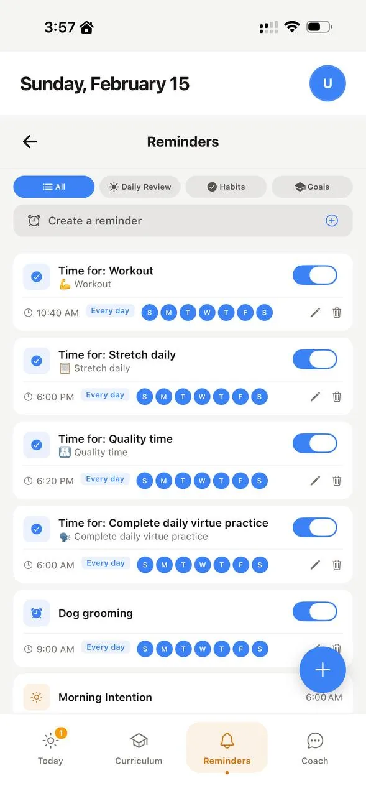
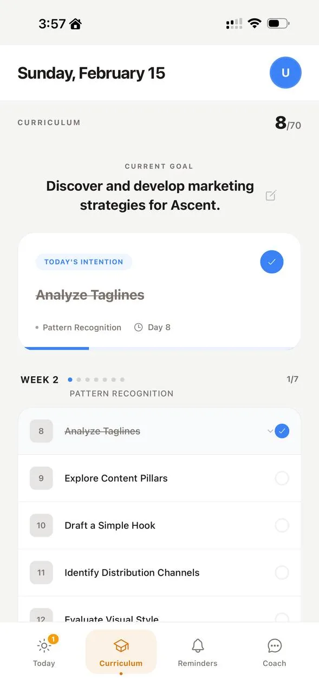

Built for distracted brains
Your home screen,
rewired.
You know what you should be doing. Ascent makes the gap between knowing and doing impossible to ignore.


You don't have a discipline problem.
Your phone was engineered by thousands of the smartest people alive to capture your attention and never give it back. You're fighting billion-dollar addiction machines with willpower — a resource that runs on the same dopamine they're draining.
Every habit app you've tried asked you to try harder. Track more. Feel bad about a broken streak. That's the same trap wearing a productivity skin.
Ascent doesn't ask you to try harder. It changes what you see when you pick up your phone.
Replace the reflex.
Morning intention. Daily practice. Evening review. Your goals on your home screen — not buried in an app you forget exists.
One goal. 60 days.
Not five goals. Not "someday." One thing you actually care about, with a deadline that makes it real.
AI builds your curriculum
A phased plan that starts embarrassingly small and ramps up. Open the app, see today's task. Done.
Widgets on your home screen
Your goal, today's task, your motivation battery — visible before TikTok, before Twitter. Every unlock becomes a pattern interrupt.
Bad day? 2-minute version.
AI shrinks today's task to two minutes. You showed up. Your brain registers a win. That's how habits actually form.
You don't start by being a runner.
You start by running once. Then again on Thursday. Then again the following week when it's raining and you'd rather not.
James Clear calls this identity-based habits — the idea that every action is a vote for the person you want to become. But here's the part most people get backwards: you don't declare an identity and then behave accordingly. You accumulate evidence, and identity follows. Nobody wakes up one morning and decides "I am a writer." They notice, after months of showing up, that they've written 40,000 words. The label arrives last.
This is why affirmations feel hollow. Saying "I am disciplined" while sitting on the couch doesn't update anything — your brain tracks evidence, not declarations. Fourteen days of showing up, even for two minutes? That updates the model.
Ascent's evening review doesn't ask who you want to be. It shows you who you were today — and lets the pattern speak for itself.
Every unlock is a cue.
You pick up your phone 80–150 times a day. Each pickup fires a cue — a stimulus that triggers whatever behavior has the strongest cached response. For most people, that's Instagram. Or Twitter. Or the thing they swore they'd stop opening.
The coffee maker beeping is a cue. The notification buzz is a cue. The lock screen lighting up is a cue. Your environment is saturated with triggers, and almost all of them point toward consumption. Not because you chose them — because someone else designed them that way.
Cue research goes back to Pavlov, but the modern version is more insidious. Digital cues are invisible because they're everywhere. You don't notice the trigger because the trigger is the device itself — and it's in your hand before you've consciously decided anything (Smith & Graybiel, 2016).
You can't eliminate the cue — you're not throwing away your phone. But you can change what it points to. A widget on your home screen means the first thing you see after unlocking isn't a feed. It's your goal.
The Motivation Battery
A readout of your dopamine receptor sensitivity (Grace, 2000) — based on sleep, screen time, exercise, and what you've done today. It drops before you feel it. When it's low, Ascent adapts: shorter tasks, gentler nudges. Not guilt. Information.

A coach that reads your data
It knows your battery level, your streaks, your Screen Time. When you're struggling, it doesn't say "you got this!" — it says "do the 2-minute version and go to bed." Clarity, not cheerleading.
The first two weeks are supposed to hurt.
When you start a new habit, the discomfort isn't in your head. It's in your synapses.
Novel behaviors require prefrontal cortex engagement — your brain's most expensive hardware. Every repetition generates adenosine, a metabolic byproduct of cognitive effort that accumulates at A2A receptors on striatal neurons. That buildup is literally what "mental fatigue" feels like (Salamone et al., 2016). It's not weakness. It's chemistry.
Meanwhile, the dorsolateral striatum — where habits eventually live as cached, automatic routines — hasn't encoded the behavior yet. Every rep still costs prefrontal energy because the goal-directed system is running the show (Yin & Knowlton, 2006). You're paying full price for something that will eventually be free.
But around week two to three, something shifts. The striato-nigro-striatal projections begin transferring control from the deliberate system to the automatic one. The behavior starts caching. Adenosine accumulation drops because the prefrontal cortex is no longer carrying the load. Research on motor learning shows measurable reductions in prefrontal activation as skills become procedural (Poldrack et al., 2005).
The effort doesn't gradually decrease because you're getting tougher. It drops because different hardware takes over. Knowing this won't make week one painless — but it might keep you from interpreting the pain as evidence that you're not cut out for it.
Screen Time, confronted
Ascent pulls your iOS Screen Time data. Not to shame you — to make the invisible visible. Hard to keep telling yourself "I don't scroll that much" when the number's staring back at you.

60-day curriculum,
not a to-do list
You set the goal. AI generates a phased plan with weekly milestones. Each morning: one task. Concrete. Doable. Connected to where you're headed.

See your first 60-day plan in under 2 minutes.
Get Ascent for iOSWhy this isn't another habit app.
Most habit apps are compliance machines. They log what you did, gamify it with streaks, and punish failure with a reset counter. When the streak breaks, so does your motivation. Ascent works differently — not because we added more features, but because we started from a different premise.
Streaks punish. A battery teaches.
The app lives on your home screen.
"Make it easy" isn't a suggestion. It's a button.
Environment over willpower.
Questions you probably have.
Yeah, we know. Most habit apps are streak counters that get deleted in two weeks. Ascent is different because the widgets live on your home screen — you don't have to remember to open it. The app is the config layer. The home screen is the product. And the 2-minute version means you literally cannot fail unless you decide to.
It was built for it. Widgets you can't avoid, tasks that shrink to 2 minutes, a motivation battery based on dopamine psychology — all of it targets the gap between knowing what to do and doing it. Works whether you have ADHD or just fried your reward circuitry like the rest of us.
Free to start. One goal, 60-day curriculum, widgets, AI coach. We're in beta on iOS — which means you get early access and can actually shape what this becomes.
Research shows habit formation takes 18–254 days depending on complexity (Lally et al., 2010). 60 days is long enough to cross from effortful to automatic for most daily habits, and short enough that your brain doesn't file it under "someday." It's a real deadline, not a life sentence.
A model of your dopamine receptor sensitivity. It factors in sleep, screen time, exercise, and daily activity to estimate how much motivational fuel you actually have. When it's low, the app adapts — shorter tasks, gentler nudges. Think of it like a phone battery: you don't "try harder" to charge it. You plug it in and stop draining it.
No. When your battery is low, Ascent says "great time for a 2-minute version" — not "you wasted your day." When you miss a day, it asks "what happened?" not "you failed." Shame doesn't build habits. Seeing clearly does.
iOS first. Android is on the roadmap. Sign up for the blog to get notified.
Stop trying harder.
Start seeing clearly.
Free on iOS. One goal. 60 days. Two minutes a day.
Download for iPhoneJoin the beta, install in minutes, and get your first 60-day plan today.